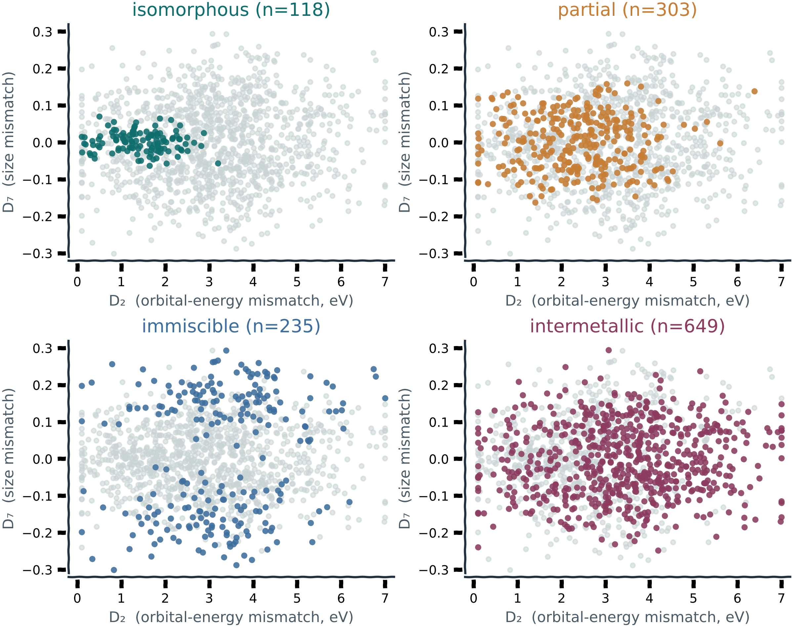
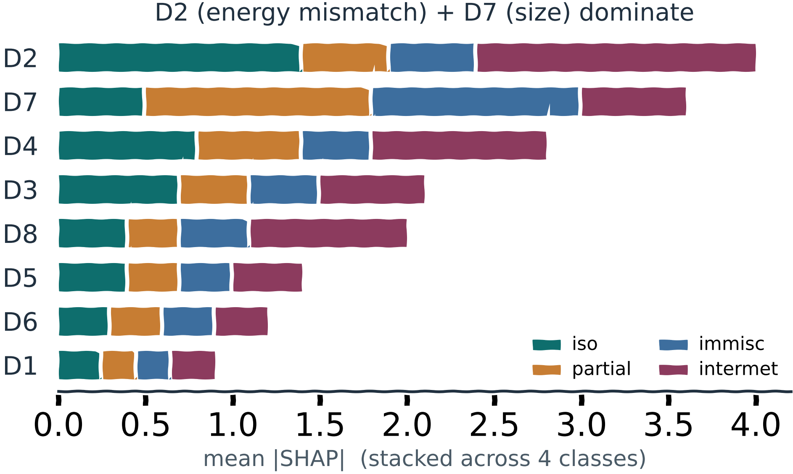

The Hume–Rothery rules are the oldest piece of alloy intuition we have: two metals form a solid solution if their atoms are similar in size, electronegativity, valence and crystal structure. Generations of metallurgists have carried them in their heads. The trouble is they are qualitative — two fuzzy rules of thumb — and on a fair, hand-checked benchmark they are right only a little more often than a coin weighted by luck.
I wanted to keep the interpretability of Hume–Rothery — the whole point is that a human can understand the answer — while making it quantitative and honest. That is COMPASS: a small set of orbital descriptors that predict how any binary pair behaves, and tell you why.
🧭 Try the COMPASS Explorer — live tool Pick any two of the 69 elements and watch the descriptors and predicted phase behaviour update in real time — the interactive app I built on top of this work. →Thirteen descriptors, built from the atom up
Eight of the descriptors (D1–D8) come straight from Harrison tight-binding theory and free-atom data — orbital energies, radii, bond-energy estimates. Four more (D9–D12) come from first-principles DFT bonding analysis — the same ICOHP and ICOBI bond measures that run through this whole thesis (available for the original 610-pair subset). A thirteenth, D13, is simply the periodic-table group distance between the two elements. Every descriptor is a physical quantity you can name.
The honest benchmark — and an open resource
A model is only as trustworthy as the data it is judged on, so I built the benchmark by hand: 970 binary pairs across 69 elements (including the lanthanides and actinides), each one labelled by reading the actual CALPHAD phase diagram and sorting it into isomorphous, partial, intermetallic or immiscible. No scraped labels, no shortcuts. Alongside it I assembled a 127,487-entry, three-source DFT database (Materials Project, OQMD, JARVIS) over 2,628 metal–metal systems — with the first cross-source agreement check for this chemistry. Then I tested COMPASS against the classic two-rule Hume–Rothery baseline and a 132-feature machine-learning model (MAGPIE).
The framing matters, and I want to be honest about it: the 132-feature MAGPIE black box is the most accurate single representation. COMPASS comes within about 0.07 in macro-F1 — but, unlike the black box, it tells you why, through explicit per-class rules and SHAP. Transparency, not raw accuracy, is the contribution.

Two master variables carry most of the signal: D2, the bond-weighted orbital-energy mismatch, and D7, the Hume–Rothery size mismatch. Eighty years on, size and energy still rule — but now with numbers.

| Feature set | # features | LOEO macro-F1 | Note |
|---|---|---|---|
| e/a baseline | 2 | 0.400 | valence-electron lower bound |
| COMPASS-13 | 13 | 0.709 | interpretable — rules + SHAP |
| JARVIS-CFID | 2190 | 0.741 | large composition featurization |
| MAGPIE (full) | 132 | 0.777 | most accurate single feature set |
Adding per-system convex-hull stability to MAGPIE lifts this to 0.817 (+0.040) — the one DFT quantity worth computing. Per-element DFT bonding descriptors, by contrast, are redundant with composition.
And because the bonding descriptors come from the same first-principles machinery as the rest of this thesis, I could check them against DFT directly: D6 correlates with ICOHP at r = 0.88 for the pure metals, and the orbital bond order tracks the Friedel bond-order estimate at r = 0.69. The tight-binding shortcuts are not hand-waving — they agree with the full quantum calculation.
Why it matters for the rest of the journey
With Chapter 3 the bond-centred view reaches its widest: from one bond in one grain, out to a map of how every pair of elements behaves. That is as far as pure electronic structure can take you on its own. To go further — to predict how a real piece of titanium yields and textures when you pull on it — the electrons have to hand off to larger scales. That hand-off is Chapter 4.